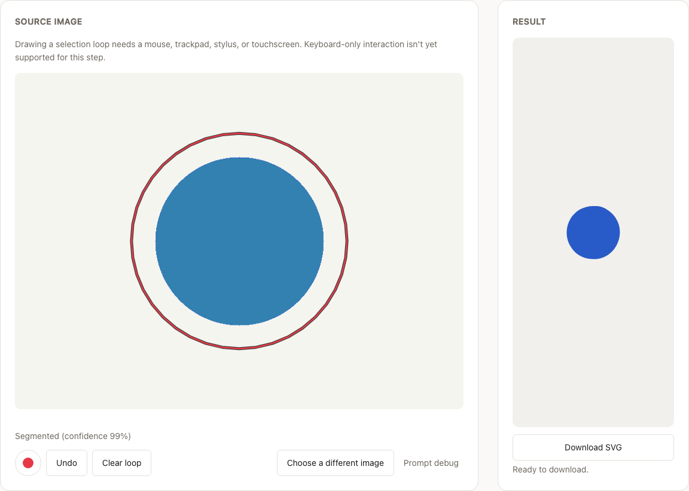
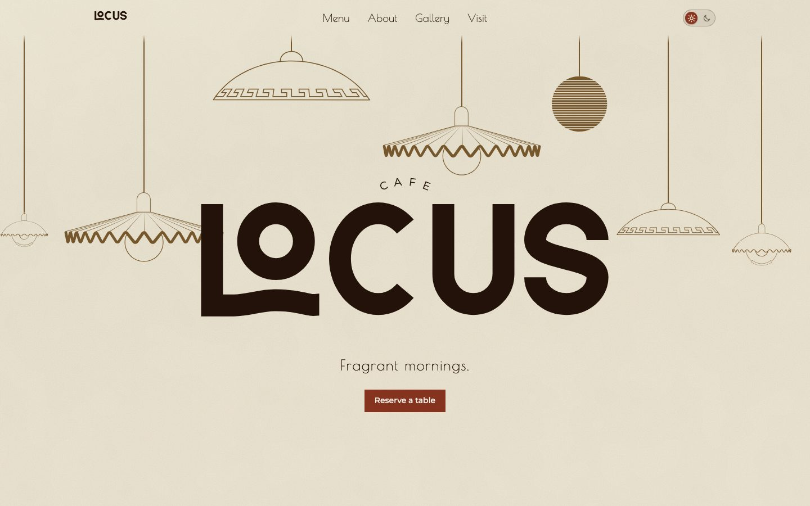
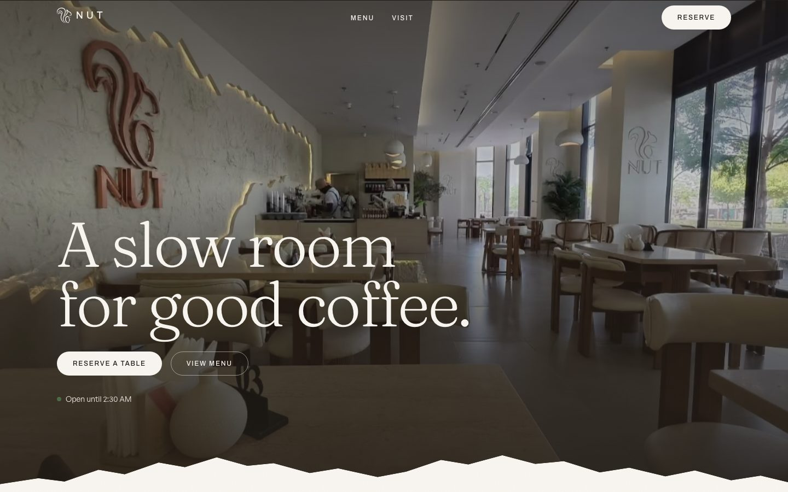

Agentic AI
Multi-step LangGraph and AutoGen agents with tool calling, state, checkpointing, and human escalation.
AI Engineer · Agentic Systems & LLM Backends
AZ-204 certified (Azure Developer Associate)
I build production AI agents that real teams depend on, and the evals, guardrails, and tests that keep them honest.
I'm a Software Engineer at Capgemini in Bengaluru, where I design, build, and support a production LLM agent platform used by 14 application teams. My work sits between the model and the business: I run demos and requirement calls with clients, turn their workflows into agent behavior, and own the system after it ships.
I care most about the unglamorous parts of AI engineering: evaluation, failure modes, guardrails, and knowing when a deterministic rule beats a model call. Outside work, I build projects that go deep on agent evaluation, retrieval quality, and computer vision in the browser.
Currently learning: AWS Bedrock, AWS AgentCore, RAGAS, MCP.
Multi-step LangGraph and AutoGen agents with tool calling, state, checkpointing, and human escalation.
Golden test sets, regression gates in CI, LLM-as-judge with calibration, cost and latency tracing.
Vector and hybrid retrieval, rerankers, and measuring whether it actually helps (nDCG, MRR).
Python, FastAPI, REST APIs, Azure (Functions, Logic Apps, Blob Storage, Cosmos DB), Docker, GitHub Actions.
Live demos, requirement gathering, onboarding teams, troubleshooting in production.
Bengaluru · July 2025 – Present
Production LLM agent
Built an Inbox Triage Agent and an Incident Orchestration Agent for a platform that lets non-technical teams build AI workflows, offsetting roughly two people's manual triage work.
Built a pipeline over 265,000+ records with EOQ-based purchase orders and GPT-4 summaries, plus a RAG pipeline on Milvus.
Azure Logic Apps and Functions behind REST APIs with Redis-cached authorization, removing every manual step for a 100+ user cohort.
Demos to the client and leadership, requirement calls with client and app teams, and direct onboarding of application teams.
AI Agent Evaluation & Regression Gating Harness
Harness built and tested. Golden-set results pending a full recorded run.
tripwire gate --run latest --baseline baselines/main.jsonHybrid Retrieval Engine with a Fine-Tuned Reranker
Honest finding: hybrid did not beat dense retrieval alone.
| Configuration | nDCG@10 |
|---|---|
| dense | 0.832 |
| fused + rerank | 0.829 |
| fused + fine-tuned | 0.805 |
| bm25 | 0.583 |
| fused | 0.516 |
Multi-Step Agent with Verification
Idempotent REST API Under Concurrency
Computer Vision Segmentation in the Browser

Full-Stack E-commerce with Stripe
Freelance web.

Marketing Website
Animated marketing site with GSAP, Lenis smooth scrolling, and a fox mascot animation. Custom LOCUS wordmark, warm oxblood dark mode where only the pendant bulbs emit light, self-hosted typography.

Website
Deployed on Cloudflare Workers.
Microsoft Certified: Azure Developer Associate (AZ-204)
Credential ID B7A2F586F1CD56DB
Expires December 2026
B.Tech, Computer Science and Engineering
CMR College of Engineering and Technology, Hyderabad
July 2025 · GPA 7.83
Bengaluru, India · open to Bengaluru, Hyderabad, Coimbatore, or remote